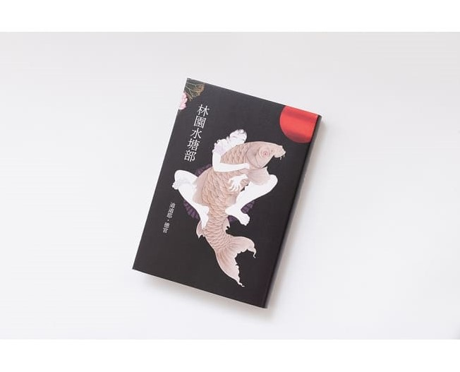

狗狗打字機
狗狗打字機
【biu 的讀書角】 林園水塘部

十二世紀平安時代日本，專門為京城供應鯉魚的漁夫意外身亡，深愛著丈夫的遺孀，為了完成丈夫未了的工作，踏上一段送鯉魚的旅程......
心得
故事從勝郎之死開啟，年輕的美雪孤獨地、在眾人地審視下承擔著丈夫的責任。
那些村里人的冷漠眼光，讓我想起太宰治的人間失格，人與人之間的疏離、冷漠、令人抑鬱難耐的氛圍，
讓人真切的感受到：啊！這是日本文學，即便出自法國小說家之手。
無論是勝郎落入河中的景象、或是美雪一個人清理著房屋，都非常具象的呈現在讀者眼前，彷彿一同走入美雪與勝郎居住的村落，
旁觀濃厚而闃靜、令人絕望的孤寂。
村莊的首長夏目以一種布爾喬亞的姿態、瞇長了眼瞅著美雪，將她當作待價而沽的商品，只想著怎麼利用這塊他還不甚滿意的軀體。
要是在豐美一點就好了呢，他心裡是多麼可惜，彷彿美雪本就屬於他、彷彿美雪還配不上他。（糟心的東西）
「旅程才剛開始，可是美雪覺得島江的某些部分已經不復記憶了。尤其是各種顏色，都被暈成單色的背景，彷彿她過去的影像都被升起的薄霧給淹沒、隨著流沙而漂離了。」